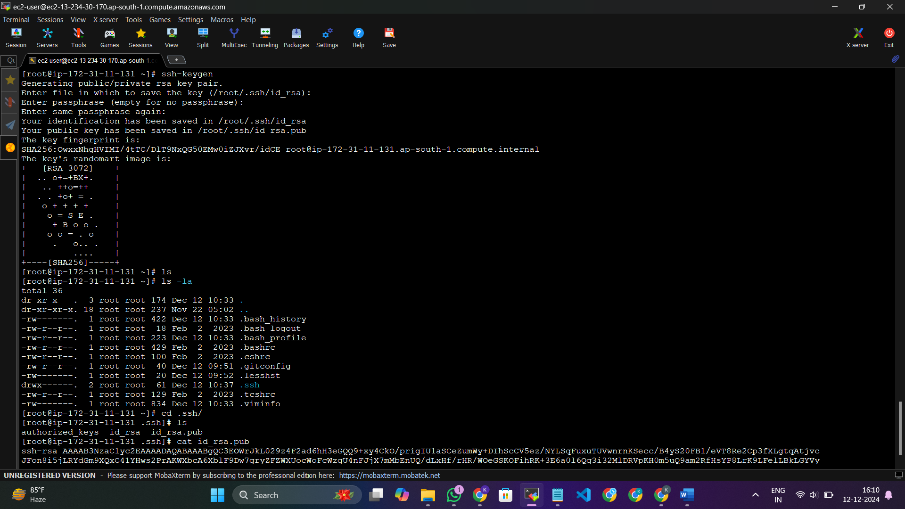

Kubernetes Deployment and CI/CD Automation
Project Overview
This project focuses on deploying a Maven-based web application using a fully automated CI/CD pipeline integrated with Jenkins, Ansible, Docker, and Kubernetes for scalability and efficiency. The setup begins with configuring a Git server on an EC2 instance to manage the source code, followed by creating a Maven web application and pushing it to a GitHub repository. A Jenkins server is then set up to handle continuous integration, with plugins and job configurations enabling automated builds and deployments. Ansible is installed on a separate EC2 instance to manage configuration and deployment tasks, including creating Docker images from WAR files and pushing them to Docker Hub.
The deployment process involves setting up a Kubernetes cluster using Amazon EKS, where Docker images are pulled and containers are orchestrated for high availability. Kubernetes manifests are used to deploy the application with a load balancer, ensuring seamless user access. For monitoring, Prometheus and Grafana are integrated using Helm charts, providing real-time insights into the performance and resource utilization of the Kubernetes cluster. The pipeline automates tasks such as code cloning, building, transferring artifacts, and deploying containers, while password-less SSH ensures secure communication between servers. The final output is a scalable, fault-tolerant web application accessible via DNS, backed by robust monitoring and automated workflows.deployments.
Technologies Used
• Version Control : Git, GitHub
• Build & Deployment Tools : Maven, Jenkins
• Containerization & Orchestration : Docker, Kubernetes, Helm
• Configuration Management : Ansible
• Cloud Technologies : AWS (EC2, VPC, IAM, EKS Stack)
• Monitoring & Logging : Prometheus, Grafana
• Web & Application Servers : Tomcat
• Operating Systems : Linux (Amazon Linux, Ubuntu)
Description
Git server (developers machine)
Name git-server
Ami amazon-linux
Instance type t2.micro
Key-pair
Security groups 22,80 port
Storage 8 Gi

Connect to git-server(ssh client(mobaxtrem))
Install and config git using the below commands
yum install git -y
git config --global user.name "kv"
git config --global user.email "kv@gmail.com"
git –version
git config --list
install maven, java and setting its path
installing maven
wget https://dlcdn.apache.org/maven/maven-3/3.9.9/binaries/apache-maven-3.9.9-bin.tar.gz
tar -xvzf apache-maven-3.9.9-bin.tar.gz
mv apache-maven-3.9.9/ maven
installing java
yum install java-17* -y
find /usr/lib/jvm/java-17* | head -n 3
Setting Path
vi .bash_profile
JAVA_HOME= /usr/lib/jvm/java-17-amazon-corretto.x86_64
M2_HOME=/opt/maven
M2=/opt/maven/bin
PATH=$PATH:$HOME/bin:$JAVA_HOME:$M2:$M2_HOME
Ssh-connection
Password less ssh connection between github and local machine
ssh-keygen
cd .ssh
cat id_rsa.pub
Copy this public key and paste it in github ssh and gpg keys

Creating simple maven project
mvn archetype:generate -> it give all available templates, out of which we want an archetype which contains a sample maven webapp project (2212 template )
mvn archetype:generate | grep maven-archetype-webapp

Now simple-maven-webapp project is created
Pushing the code to github(central-repo)
Create a repository in github and execute the following commands
git remote add origin git@github.com:KanthivardhanK/webapp-project.git
git branch -M main
git add .
git commit -m "first commit"
git push -u origin main

Launching Jenkins-server
Launch an ec2 server with below configuration
Name jenkins-server
Ami amazon-linux
Instance type t2.medium
Key-pair
Security groups 22,80,8080 ports
Storage 15 Gi
Connect to Jenkins-server
prerequisite to install Jenkins – java
yum install java-17* -y
find /usr/lib/jvm/java-17* | head -n >
install git and maven as we run the jobs related to maven
wget https://dlcdn.apache.org/maven/maven-3/3.9.9/binaries/apache-maven-3.9.9-bin.tar.gz
tar -xvzf apache-maven-3.9.9-bin.tar.gz
mv apache-maven-3.9.9/ maven
setting java and maven path
vi .bash_profile
JAVA_HOME= /usr/lib/jvm/java-17-amazon-corretto.x86_64
M2_HOME=/opt/maven
M2=/opt/maven/bin
PATH=$PATH:$HOME/bin:$JAVA_HOME:$M2:$M2_HOME
Installing Jenkins
sudo wget -O /etc/yum.repos.d/jenkins.repo https://pkg.jenkins.io/redhat-stable/jenkins.repo
sudo rpm --import https://pkg.jenkins.io/redhat-stable/jenkins.io-2023.key
yum install Jenkins -y
service Jenkins start
chkconfig Jenkins on
To connect to jenkins dashboard
jenkins server Public IP:8080
copy the password from the given path and continue
Install the below mentioned plugins and Configure the java,git and maven paths in Jenkins tools
Launching jenkins slave
Launch an ec2 instance and install java-17*
In Jenkins dashboard creade node and paste the command in jenkins slave
now the node is connected successfully
install the Plugin "instance identity"
and mmodify -> Manage Jenkins-security-agents to "random"
Launching Ansible server
Launch ec2 instance
Name ansible-server
Ami amazon-linux
Instance type t2.micro
Key-pair
Security groups 22,80 ports
Storage 8 Gi
Connect to instance using mobaxterm
Install ansible
yum install python -y
yum install python-pip
pip install ansible
ansible –version
Launch k8s-server
Launch ec2 instance with the following configuration
Name k8s-server
Ami amazon-linux
Instance type t2.medium
Key-pair
Security groups 22,80 ports
Storage 25 Gi
Create user ansadmin and passwd in both the ansible-server and k8s-server
useradd ansadmin
passwd ansadmin
Visudo
ansadmin ALL=ALL NOPASSWD=ALL
Vi /etc/ssh/sshd_config
Passwordauthentication yes
Permitrootpassword yes
Connecting ansible server with k8s-server (password-less ssh authentication)
In ansible-server being ansadmin user
Ssh-keygen
In both ansible-server and k8s-server
Passwd root (give password)
Vi /etc/ssh/sshd_config
PasswordAuthentication ye
Permitrootpassword yes
In ansible-server as ansadmin
ssh-copy-id root@(k8s-server-private-ip)
ssh-copy-id ansadmin@(ansible-server-private-ip)
vi /etc/ansible/hosts
[k8s_server]
k8s-server-private-ip
[ansible_server]
ansible-server-private-ip
run the following command
ansible all -m ping
Now ansible is connected to k8s server successfully!!
Connecting Jenkins with ansible-server
Configure the system setings in jenkins dashboard as below
In jenkins dashboard manage Jenkins>system add ssh server and details as below
Installing docker in ansible server
yum install docker -y
service docker start
Creating a job(simple-maven-project) in Jenkins
Add github repository and add maven goal as show in below
Finally add post-build action which transfer war file to the ansible-server(/opt/docker)
Befor that give full permission to /opt/docker file
chown -r ansadmin:ansadmin /opt/docker
After building the job we get war file in ansible server as below
In ansible server under /opt/docker as ansadmin
vi Dockerfile
FROM tomcat:latest
RUN cp -R /usr/local/tomcat/webapps.dist/* /usr/local/tomcat/webapps
COPY ./*.war /usr/local/tomcat/webapps
sudo chmod 777 /var/run/docker.sock
Vi webapp.yml
---
- hosts: ansible_server
become: true
tasks:
- name: deleting image
command: docker rmi webapp:v1
ignore_errors: yes
- name: create docker image
command: docker build -t webapp:v1 .
args:
chdir: /opt/docker
- name: deleting reserved image
command: docker rmi kanthivardhan/webapp:v1
ignore_errors: yes
- name: log into Docker Hub
command: docker login --username {{"kanthivardhan"}} --password {{"* * * * *"}}
- name: reserving space for image
command: docker tag webapp:v1 kanthivardhan/webapp:v1
- name: pushing image to docker hub
command: docker push kanthivardhan/webapp:v1
ansible-playbook webapp.yml –check
ansible-playbook webapp.yml
Now the docker image is pushed to docker hub successfully.
Installing kubernetes
Installing kubectl
kubectl version --client
curl -O https://s3.us-west-2.amazonaws.com/amazon-eks/1.31.2/2024-11-15/bin/linux/amd64/kubectl
chmod +x ./kubectl
mkdir -p $HOME/bin && cp ./kubectl $HOME/bin/kubectl && export PATH=$HOME/bin:$PATH
echo 'export PATH=$HOME/bin:$PATH' >> ~/.bashrc
Installing eksctl
# for ARM systems, set ARCH to: `arm64`, `armv6` or `armv7`
ARCH=amd64
PLATFORM=$(uname -s)_$ARCH
curl -sLO "https://github.com/eksctl-io/eksctl/releases/latest/download/eksctl_$PLATFORM.tar.gz"
# (Optional) Verify checksum
curl -sL "https://github.com/eksctl-io/eksctl/releases/latest/download/eksctl_checksums.txt" | grep $PLATFORM | sha256sum --check
tar -xzf eksctl_$PLATFORM.tar.gz -C /tmp && rm eksctl_$PLATFORM.tar.gz
sudo mv /tmp/eksctl /usr/local/bin
Creating the Kubernetes Cluster
eksctl create cluster –name kv –region ap-south-1 –node-type t2.small
It will create nodes in aws
Keep the below manifests in k8s-server under /root
vi webapppod.yml
kind: Deployment
apiVersion: apps/v1
metadata:
name: webapp-deploy
spec:
replicas: 3
selector:
matchLabels:
app: webapp
template:
metadata:
labels:
app: webapp
spec:
containers:
- name: webappcont
image: kanthivardhan/webapp:v1
imagePullPolicy: Always
ports:
- containerPort: 8080
vi webappservice.yml
kind: Service
apiVersion: v1
metadata:
name: webapp-service
spec:
selector:
app: webapp
ports:
- port: 8080
targetPort: 8080
type: LoadBalancer
vi kube-deploy
---
- hosts: k8s_server
become: true
tasks:
- name: apply webapppod.yml manifesst
command: /root/bin/kubectl apply -f /root/webapppod.yml
- name: update deployment with new image updated in docker hub
command: /root/bin/kubectl rollout restart deployment.apps/webapp-deploy
ignore_errors: yes
- name: waiting time
command: sleep 20
- name: applying webappservice.yml
command: /root/bin/kubectl apply -f /root/webappservice.yml
webapp.yml created docker image and pushed to docker hub
kube-deploy creates pods and loadbalance in k8s-server
After creating all these paybooks and manifests
we have to place the two ansible command s in Jenkins-job configuration
Finally The job is created
Buidl The Job
After triggering the job, automatically the job will,
1-clone the code from github
2-build the source code
3-creates war file
4-war file transferred to ansible server
5-docker image is created including the war file
6-docker images is pushed to docker hub
7-from docker hub images is pulled and created containers in k8s-server
8-loadbalancer service is created
9-accessing using dns:8080/webapp-project
10-monitoring using Prometheus and Grafana
The Final Webpage:
Monitoring the k8s cluster using Prometheus and Grafana
Add the below helm repo
helm repo add prometheus-grafana-kv https://prometheus-community.github.io/helm-charts
helm repo list
helm pull prometheus-grafana-kv/kube-prometheus-stack
tar -xvzf kube-prometheus-stack-66.4.0.tgz
installing the helm chart
helm install Prometheus Prometheus-grafana-kv/kube-prometheus-stack
chart deployed
kubectl get all
out of these many I need only one pod in which Prometheus and Grafana are running
To get th dashboard I need to edit the service file type as LoadBalancer of Prometheus and Grafana
kubectl edit svc prometheus-grafana
kubectl get all
we got the LB for that pod
Copy load balancer and paste it in browser
We get Grafana logine page
Username – admin
Password – prom-operator
Monitoring things
Search for Kubernetes/computeResources/multi-cluster
It will show cpu and memory and some other usages in the form of graphs (for pods in nodes)
For server
search for Kubernetes/apiserver
It shows availability server, memory usage of server but mostly we see up and running of server
Configure environment variables
=> global tools => ansible => install automatically
Click on Snippet generator select AnsiblePlaybook: Invoke an ansible playbook
To monitor other things
NodeExporter/USEMethod/cluster
Same graphs with different colours